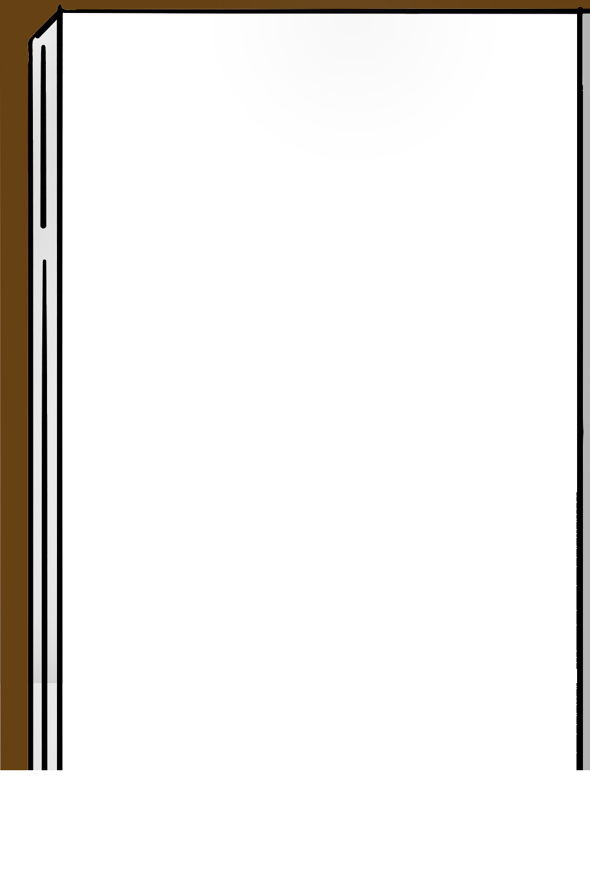
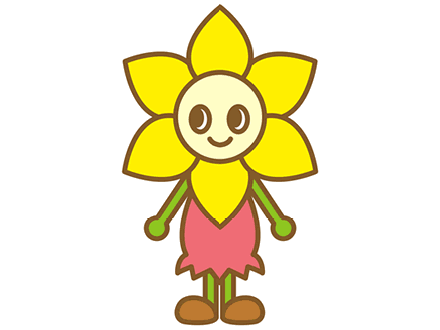

<ons-page id="diary_page">
    <div class="mainContent" style="height:100%; overflow-y:hidden">
        <div style="position:absolute; top:4%; width:100%; text-align:center">
            <ons-button id="photoBtn" style="display:none" modifier="large">この日記の写真を変える</ons-button>
        </div>
    
        <div style="position:absolute; left:10%; top:16%; height:84%; overflow:hidden;">
            
        </div>
        
        <div style="position:absolute; top:19%; left:22%; font-size:20pt; height:80%; padding-right:15px; overflow-y:scroll">
            
            <div style="text-align:center">
                 <br />
                <br />
                <span style="text-align:right" id="page"></span>
            </div>
            <div id="msg2" style="clear:both">まだ日記を見つけてません</div>
        </div>
    </div>
</ons-page>

<ons-template id="photoChoose.html">
    <ons-dialog var="photoChooseDlg" style="width:90%" cancelable animation="none">
        <div style="padding:10px">
            <ons-button modifier="large" var="cameraBtn" onclick="photoType=1; photoChooseDlg.hide();">カメラで撮影する</ons-button>
            <br />
            <ons-button modifier="large" var="albumBtn" onclick="photoType=2; photoChooseDlg.hide();">アルバムから選ぶ</ons-button>
            <br />
            <ons-button modifier="large" var="albumBtn" onclick="photoType=3; photoChooseDlg.hide();">デフォルトに戻す</ons-button>
        </div>
    </ons-dialog>
</ons-template>